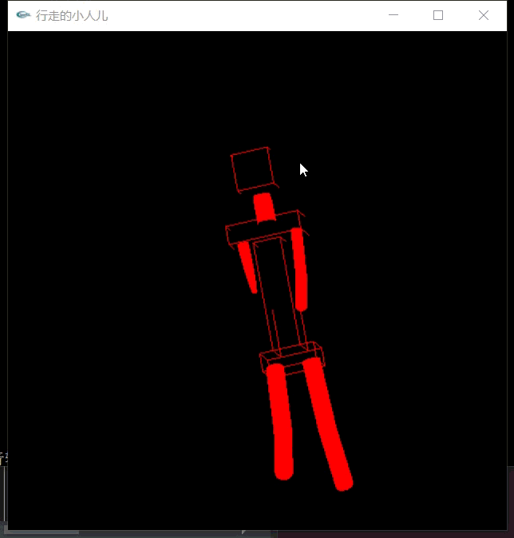

任务一：行走的小人
实验完成中遇到的问题和解决办法： 1、选定腰部节点为根节点。这样可以使小人的上半身和下半身按照相同的运动函数进行移动。 2、绘制立方体和圆柱体。小人的躯干采用长方体实现，而四肢采用圆柱体，不仅可以良好的区分两部分，更符合人体的圆柱形手臂摆动规律。 3、移动函数的构造。因为小人是有大臂和小臂的，在大臂摆动的同时，小臂要实时更新肘关节位置以保证手臂不散架，并且两个臂的摆动频率应相同，而腿部的运动也具有相同的特点 4、整体的平移。为了让小人走起来，在函数实现时，应先移动坐标轴（矩阵点）然后再绘制身体各部分，四肢的移动也应在整体前进的函数之后实现。 5、调试。对视角的选定、窗口大小、小人运动方向以及速度等因素，应不断调试以达到最佳效果。